Lab8: Codificação de audio
Nesse laboratório iremos realizar as seguintes etapas:
Utilizando as possibilidades de codificações ffmpeg de áudio trazendo audios codificados em taxas fixas e variáveis onde observamos os efeitos dessas codificações nas formas de onda, espectrogramas e no arquivo de áudio resultante. Essas análises também foram feitas explorando o comando ffmpeg para aumentar e diminuir a velocidade de reprodução dos áudios.
-Começamos o laboratorio trazendo o audio original Fornecido (Abba - Fernando) em 320kbps.
Abaixo a versão do audio original Fornecido (Abba - Fernando) em 128kbps.
Abaixo a versão do audio original Fornecido (Abba - Fernando) em 64kbps.
Abaixo a versão do audio original Fornecido (Abba - Fernando) em 32kbps.
Abaixo a versão do audio original Fornecido (Abba - Fernando) em 16kbps.
Abaixo a versão do audio original Fornecido (Abba - Fernando) em 8kbps.
Seguimos os procedimentos utilizando o audio original fornecido, trazendo assim as formas de ondas para todas as versões criadas acima.
Forma de onda para o audio original Fornecido (Abba - Fernando) em 320kbps.
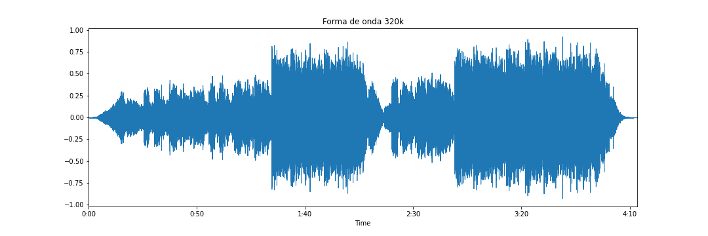
Forma de onda para o audio original Fornecido (Abba - Fernando) em 128kbps.
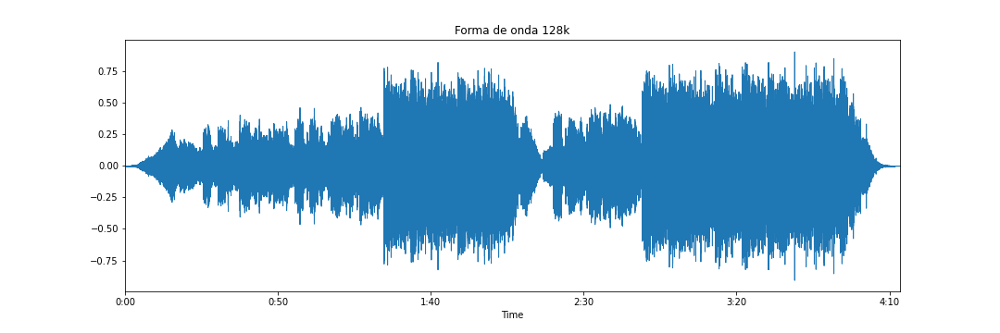
Forma de onda para o audio original Fornecido (Abba - Fernando) em 64kbps.
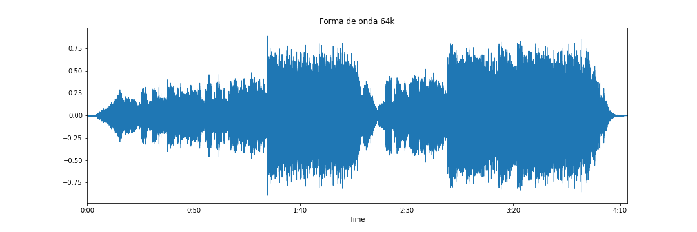
Forma de onda para o audio original Fornecido (Abba - Fernando) em 32kbps.
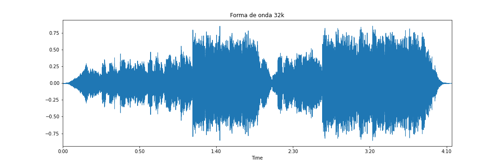
Forma de onda para o audio original Fornecido (Abba - Fernando) em 16kbps.
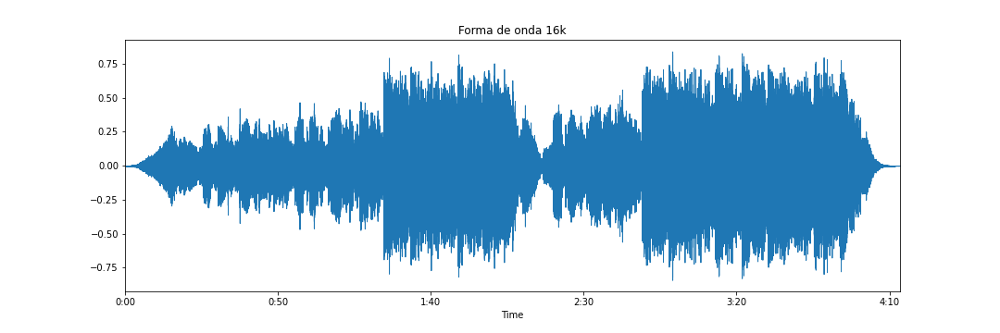
Forma de onda para o audio original Fornecido (Abba - Fernando) em 8kbps.
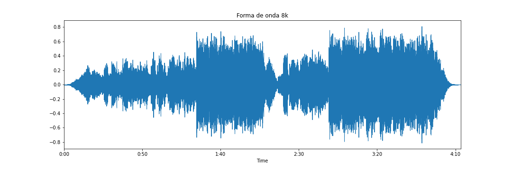
Seguimos os procedimentos utilizando o audio original fornecido, trazendo assim os espectrogramas das versões criadas.
Espectograma do audio original Fornecido (Abba - Fernando) em 320kbps.
Espectograma do audio original Fornecido (Abba - Fernando) em 128kbps.
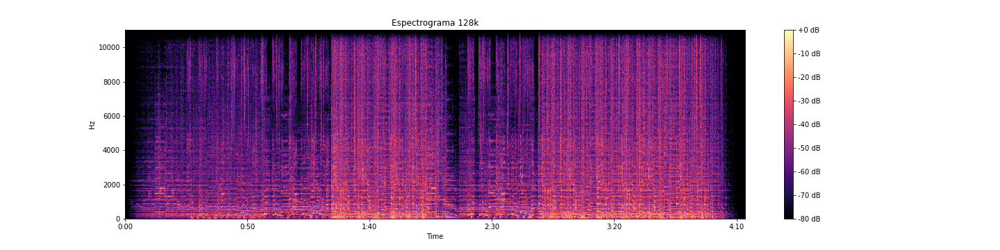
Espectograma do audio original Fornecido (Abba - Fernando) em 64kbps.
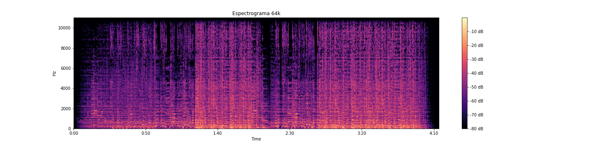
Espectograma do audio original Fornecido (Abba - Fernando) em 32kbps.
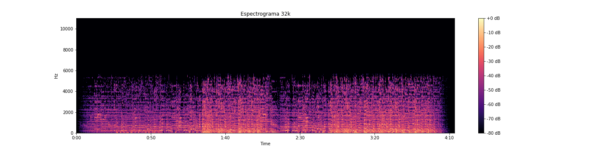
Espectograma do audio original Fornecido (Abba - Fernando) em 16kbps.
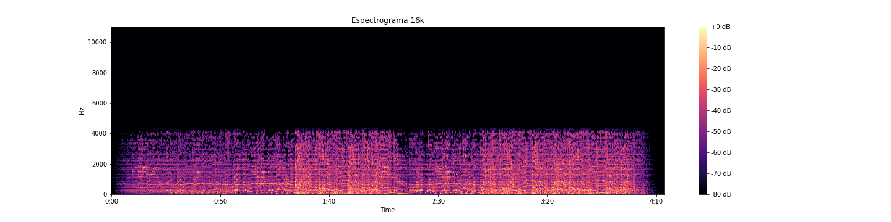
Espectograma do audio original Fornecido (Abba - Fernando) em 8kbps.
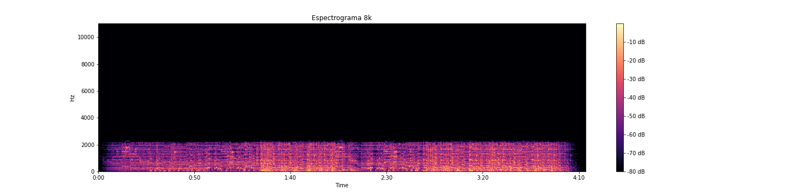
Seguindo as etapas do laboratorio, apresentamos abaixo o audios original com sua velocidade de execução alterada.
Audio original com velocidade aumentada 2x.
Audio original com velocidade reduzida em 2x.
Com isso, temos também a forma de onda e espectrograma de ambos os audios com velocidade alteradas.
Abaixo segue a forma de onda e espectrograma do audio com velocidade aumentada em 2x.
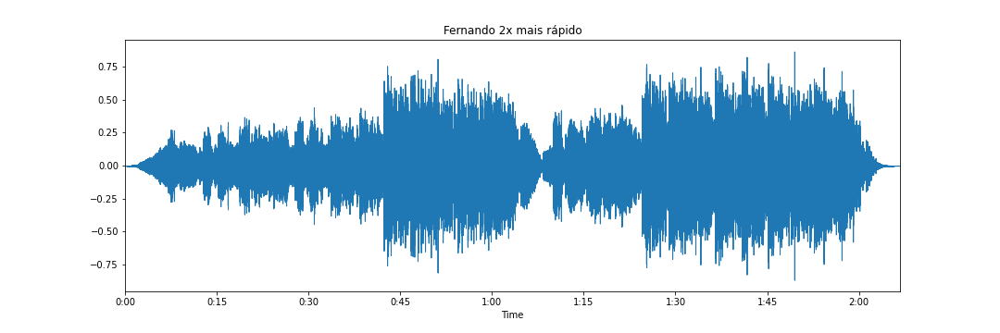
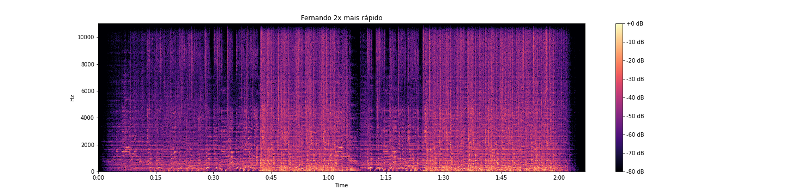
Abaixo temos a forma de onda e espectrogama do audio com velocidade reduzida em 2x.
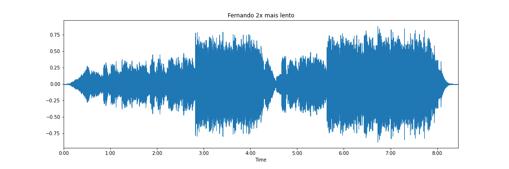
Etapa 2 - audio escolhido foi Upside Down - Jack Jhonson
Abaixo segue a versão original do audio escolhido.
Iremos apresentar os fatores de qualidade de 0 a 9 abaixo.
-Upside Down - fator de Qualidade 0
-Upside Down - fator de Qualidade 1
-Upside Down - fator de Qualidade 2
-Upside Down - fator de Qualidade 3
-Upside Down - fator de Qualidade 4
-Upside Down - fator de Qualidade 5
-Upside Down - fator de Qualidade 6
-Upside Down - fator de Qualidade 7
-Upside Down - fator de Qualidade 8
-Upside Down - fator de Qualidade 9
Trazemos abaixo os espectrogramas referentes aos audios de qualidade 0 a 9
Abaixo segue o espectrograma do audio com qualidade 0
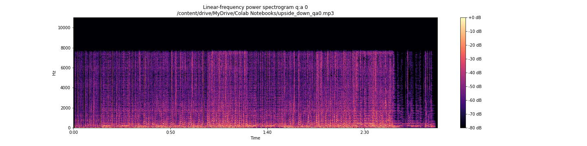
Segue o espectrograma do audio com qualidade 1
Segue o espectrograma do audio com qualidade 2
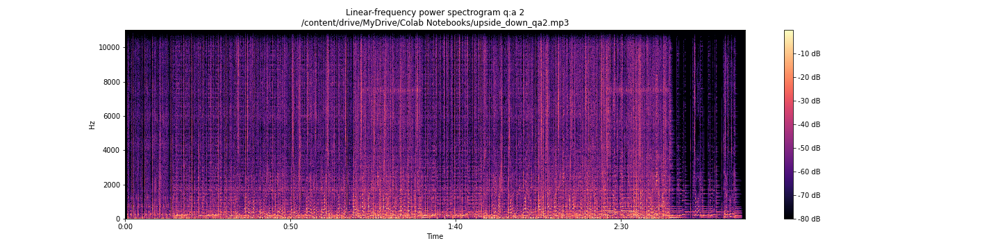
Segue o espectrograma do audio com qualidade 3
Segue o espectrograma do audio com qualidade 4
Segue o espectrograma do audio com qualidade 5
Segue o espectrograma do audio com qualidade 6
Segue o espectrograma do audio com qualidade 7
Segue o espectrograma do audio com qualidade 8
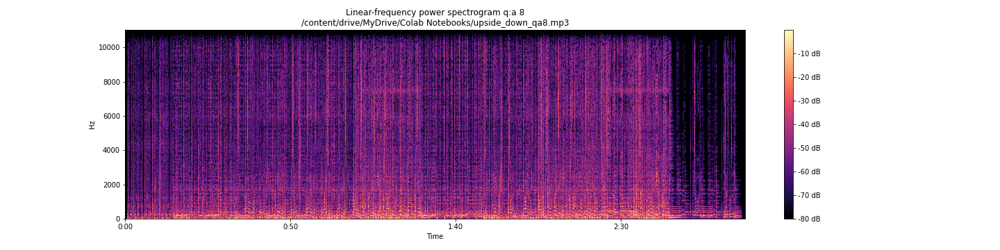
Segue o espectrograma do audio com qualidade 9
Seguindo o laboratorio, alteramos a velocidade do audio Upside Down
Abaixo segue a versão do audio com a velocidade aumentada em 2x e o seu referente espectrograma
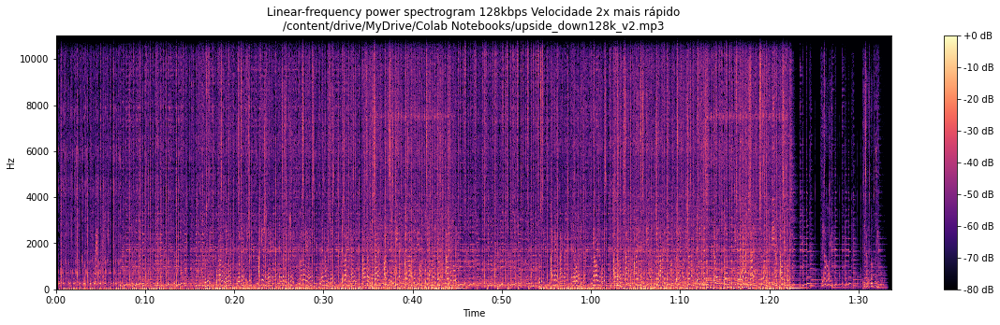
Segue a versão do audio com a velocidade diminuida em 2x